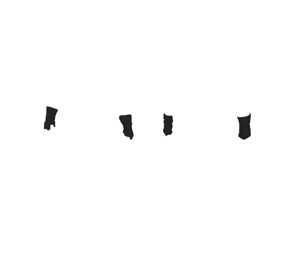
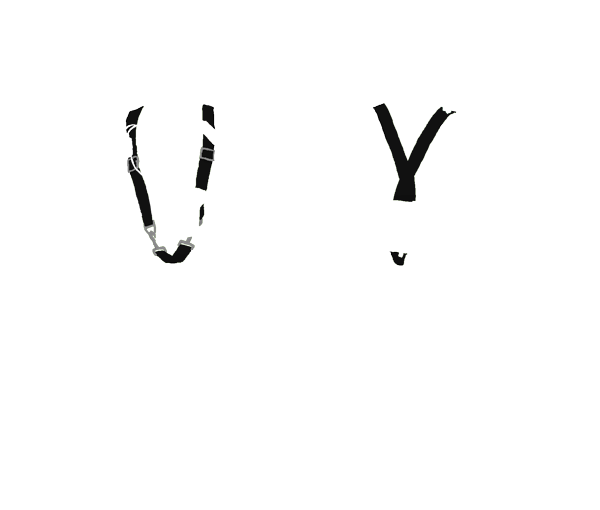
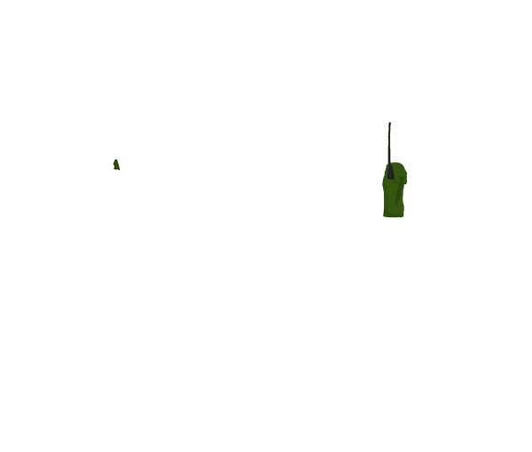
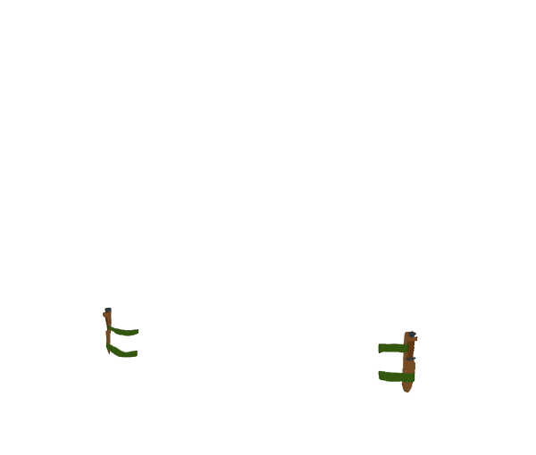
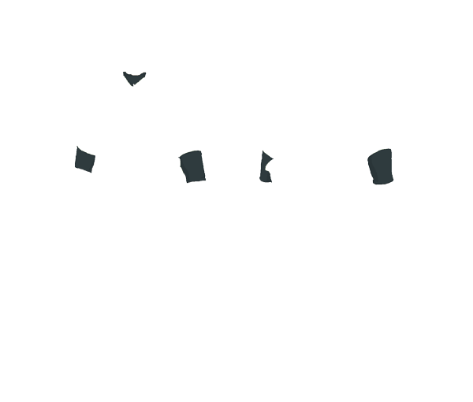
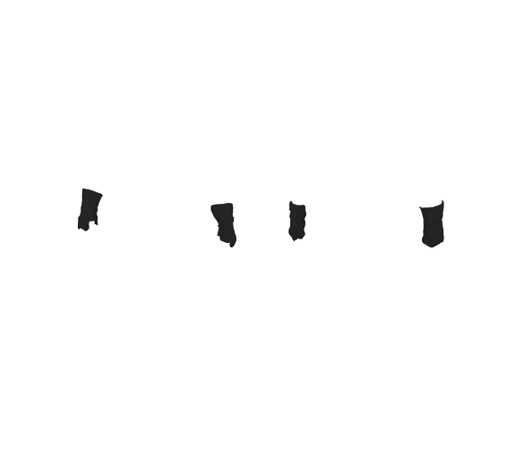
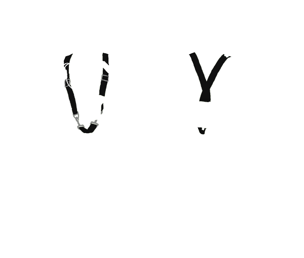
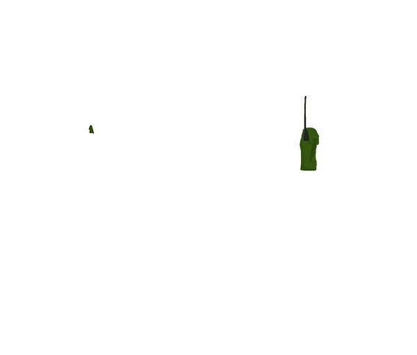
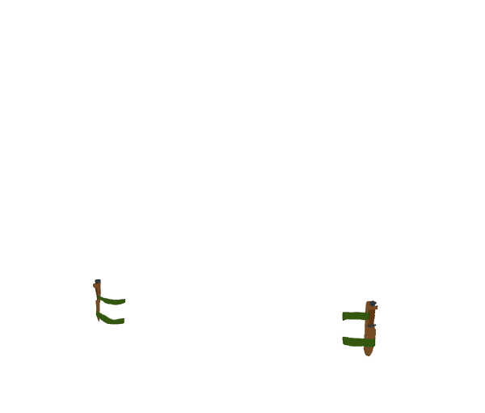
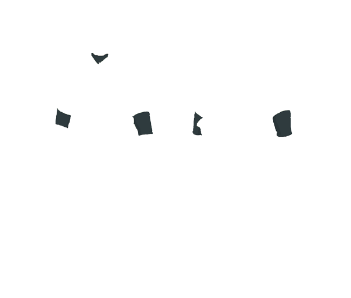

LOADING
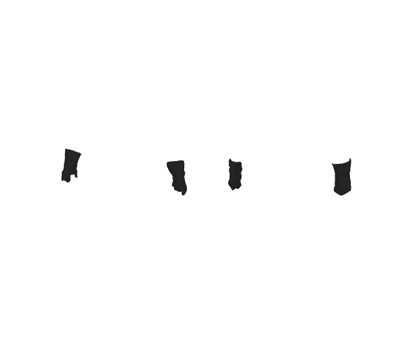
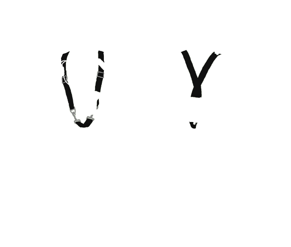
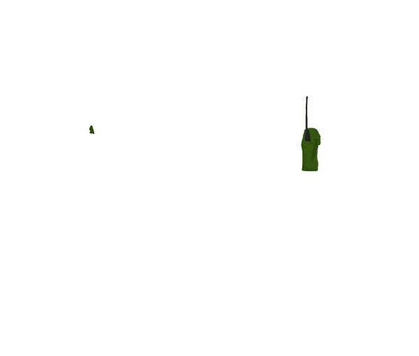
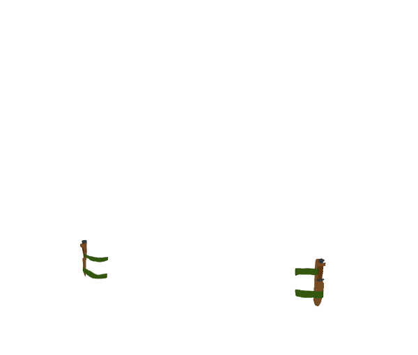
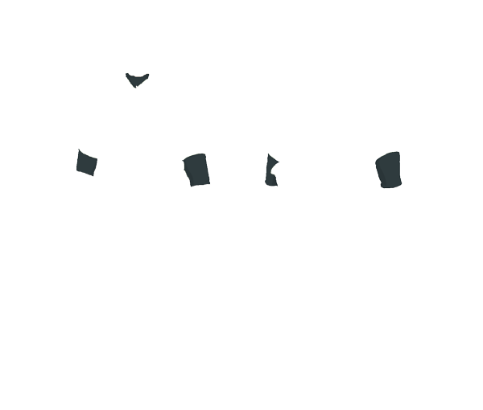
Part of the M-1956 Load-Carrying Equipment system.
In 1956 the US Army employed several types of cartridge belts for soldiers armed with the M1 Garand, BAR belts for those armed with the M1918 Browning Automatic Rifle, 3- and 5-cell pockets for those armed with sub-machine guns, a pocket for 15 round M1 Carbine and M2 magazines, and two different pockets for the 30 round magazines, in addition to 2- and 3-cell grenade pouches.
The M1956 Small Arms Ammunition case sought to replace all of these with a pair of simple pouches capable of holding a bandoleer of M1 Garand clips (5 total), 2 BAR magazines, 4 30-round carbine magazines, in addition to two grenades each. The equipment came at a time when the M14 Rifle was being tested, and the ammunition pouch was thus also designed to hold 3 20-round M14 magazines.
The cases were issued in pairs and worn at the front of the belt on either side of the buckle. Like all other M1956 equipment they were constructed of heavy canvas. The top flap was closed by means of a metal eyelet and cloth tab closure. Early models featured a steel plate at the front both to maintain rigidity and to protect the ammunition. Two hand grenades of any type in the US arsenal could be attached on either side of each pouch, with the spoon hooked through a web strap and another web strap with snap-closure wrapped around the top.
Like other pouches in the system, the ammunition pouches each attached to the web belt with a pair of slide keepers and, uniquely, an adjustable length strap with a closable hook which connected to the rectangular hook on the suspenders, intended to keep the case upright and transfer some of the weight directly to the shoulders.
Additional Resources:
This is just a piece of greenish cloth wrapped around the head.
Besides looking super bad-ass, Snake wears his bandana low on his brow to keep the sun and his own sweat out of his eyes. He is also seen to use his bandana as a impromptu sling for a broken arm.
Snake acquired his bandana from his former mentor, The Boss, before she defected to the Soviet Union.
In the early 1960s, the Army Utility Uniform was the standard issue field uniform. In 1964, Army special forces in Vietnam were issued the Tropical Combat Uniform, an enhanced uniform made of lighter weight fabric for tropical environments.
Snake's uniform seems to be an even further enhanced version. In 1964, the Tropical Combat Jacket had epaulets which are not present on Snake's uniform. These loops were not removed from the TCJ until 1966. Additionally, the TCJ featured four bellow pockets on the front, whereas Snake's only has two, like the Utility Jacket. Snake's jacket also includes a pocket on the left shoulder which is not present in any of the uniforms of the time.
Uniforms in the era were primarily Olive-Drab in color. During the Vietnam War, the Tiger Stripe pattern and later, the ERDL patterns were used. In Metal Gear Solid 3, however, Snake uses a variety of real and fictional camouflage patterns from various time periods.
See Also:
Additional Resources:
Use of the STABO harness would seem to accentuate the groin of the user. Snake, however, has managed to defeat this bulge through unknown means.
In the early 1960s, the Army Utility Uniform was the standard issue field uniform. In 1964, Army special forces in Vietnam were issued the Tropical Combat Uniform, an enhanced uniform made of lighter weight fabric for tropical environments.
The Tropical Combat Trousers feature two slash side pockets, two rear hip pockets, and, unlike the Utility Trousers, two bellow cargo pockets.
Uniforms in the era were primarily Olive-Drab in color. During the Vietnam War, the Tiger Stripe pattern and later, the ERDL patterns were used. In Metal Gear Solid 3, however, Snake uses a variety of real and fictional camouflage patterns from various time periods.
See Also:
Additional Resources:
In the early 1960s, a jungle boot incorporating most of the improvements developed since the end of World War II was issued to U.S. forces personnel during the Vietnam War. In the improved boot, the upper was made of cotton canvas duck, with leather for the toe and heel, and nylon reinforcements for the neck of the boot.
The new Jungle boot originally used a Vibram-type lugged composition rubber sole strongly vulcanized to the leather toe and heel. Water drains (screened eyelets) were added to the canvas top near the sole to quickly drain water from the inside of the boot. Removable ventilating insoles made of fused layers of Saran plastic screen, first invented in 1942, were later adopted for the issue Jungle boot. The insoles trapped air which was circulated throughout the interior of the boot during the act of walking; moist interior air was exchanged for outside air using the water drain eyelets.
After numerous widely-reported incidents of foot injuries to U.S. forces caused by punji stake traps, issue Jungle boots were fitted with a stainless steel plate inside the boot's sole to protect the wearer from punji stake traps. Later Jungle boots were given nylon canvas tops in place of cotton duck.
Source: Wikipedia
Additional Resources:
Part of the M-1956 Load-Carrying Equipment system.
The Field Pack was a square canvas pouch, just larger than a foot square, designed to hold a single day's Meal, Combat, Individual (C-Ration) as well as sparse personal implements like a shaving kit and extra socks, The bed roll was attached externally. The Field Pack's placement at the rear of the pistol-belt led to it being referred to colloquially as the "butt pack." The first pattern featured a square top flap which closed with a pair of web straps and friction buckles.
This design was modified slightly in the 1961-pattern Field Pack. Common features of both including canvas construction, attachment to the pistol belt with two slide keepers and a pair of eyelets at the top of the pack for attaching the individual suspenders directly to the pack in order to keep it upright and help distribute weight to the shoulders. Both also included a web handle at the top for hand-carriage, web strap along the side with eyelets for the attachment of equipment with either slide keepers or wire hangers, and a pair of web straps at the bottom of the pack for attaching items like the poncho and poncho liner. Both also featured a clear plastic window on the inner side of the pack for inserting a card with name and service number, as well as cloth-taped edges.
Source: Wikipedia
Additional Resources:
Part of the M-1956 Load-Carrying Equipment system.
With the adoption of the M1956 equipment, the older M1910 1-quart aluminum canteen and WWII-production steel canteens remained in service well into the 1960s, later replaced by a plastic variant introduced in 1962. Both were of similar dimensions and slightly curved to sit comfortably on the hip.
As a result the M1956 canteen cover was not fundamentally different from the earlier models with the exception of the use of two slide keepers in lieu of a wire hanger and metal snaps for closure instead of lift-the-dot fasteners. Constructed of heavy canvas with cloth-taped edges the M1956 canteen cover had a synthetic wool felt lining for insulation, and was slightly oversized to accommodate both a canteen and the metal canteen cup in which it nested.
Typically canteen covers also demonstrate the most visible signs of age, fading easily due to continuous wetting and drying. Originally a single canteen and cover was issued and worn either on the belt between the Small Arms Ammunition Case at the front and the Field Pack at the rear, or mounted on the side of the Field Pack. Troops in Vietnam generally wore two or more canteens, and this practice largely continued after the war, as, with the adoption of larger complementary rucksacks, Entrenching Tools often migrated to attachment points on the rucksack, freeing space on the pistol belt for another canteen.
Source: Wikipedia
Additional Resources:
A plain, generic fighting knife with a cord wrapped handle.
Snake uses his CQC knife in combination with a hand gun while using CQC - a close quarters combat fighting style.
While MGS3 states that CQC was developed by Snake and The Boss, it is based on an actual fighting style developed after WWII by William E. Fairbairn and Eric A. Sykes.
Additional Resources:
Simliar styled knife at IMS Plus¹
Eyepatches have been used by pilots and sailors throughout history to maintain their night vision during the day or while in a brightly lit situation. They are also used to cover a scarred or missing eye.
Snake was blinded after a near miss from a Colt Single Action Army¹.
The M1949 Glove Shells were black leather gloves which were supposed to be worn with wool knit glove inserts.
They earned their nickname of "Recon Gloves" due to their popularity with reconnaissance troops. Soldiers would often cut the index finger and thumb off of the gloves for a better feel of their equipment and weapons.
Additional Resources:
The STABO is an airborne military equipment for abseiling. The rig was developed at the MAC-V Recondo School in Vietnam, to allow the rapid extraction of reconnaissance personnel by helicopter.
Equipped with a standard pistol belt, the harness was also designed in part to replace the M1956 / M1967 Load Carrying Suspenders. The STABOs leg straps were folded up and secured by tape or rubber bands against shoulder straps until needed.
Source: Wikipedia
Additional Resources:
The M1911 is a single-action, semi-automatic pistol (handgun) chambered for the .45 ACP cartridge. It was designed by John M. Browning, and was the standard-issue side arm for the United States armed forces from 1911 to 1985, and is still carried by some U.S. forces. It was widely used in World War I, World War II, the Korean War and the Vietnam War. Its formal designation as of 1940 was Automatic Pistol, Caliber .45, M1911 for the original Model of 1911 or Automatic Pistol, Caliber .45, M1911A1 for the M1911A1, adopted in 1924. The designation changed to Pistol, Caliber .45, Automatic, M1911A1 in the Vietnam era. In total, the United States procured around 2.7 million M1911 and M1911A1 pistols during its service life.
The M1911 is the most well-known of John Browning's designs to use the short recoil principle in its basic design. Besides the pistol being widely copied itself, this operating system rose to become the pre-eminent type of the 20th century and of nearly all modern centerfire pistols.
Source: Wikipedia
Additional Resources:
M-1911 .45 Automatic Pistol @ Olive-Drab¹
A black leather holster with wire hanger, for the M1911A1 .45 caliber pistol. The wire hanger would fit into the eyelets of the pistol belt.
Source: Wikipedia
Additional Resources:
This is just a simple elastic knee brace. It helps support Snake's knee from the stress that special operations put on a fellow.
More importantly, it just looks really freakin' cool.
Army regulations are generally strict about facial hair, only allowing a neatly trimmed mustache.
An exception is made for Special Forces operations where the soldiers need to fit in with the local culture (such as Afganistan and Iraq) or when the operation leaves little time for proper grooming practices (as with the sweet mullet).
This was part of the M-1956 Load-Carrying Equipment system.
The M-1956 LCE continued the traditional fighting load concept of an individual equipment belt supported by individual equipment belt suspenders. It differed from previous United States military designs, however, by relying on a single individual equipment belt for soldiers armed with all small arms as opposed to three separate individual equipment belts; the M-1936 individual equipment belt, the M-1923 cartridge belt for the Rifle, Caliber .30, M1, and the M-1937 cartridge belt for the Rifle, Caliber .30, Automatic, M1918.
The olive drab U.S. Army Shade 7 cotton canvas Belt, Individual Equipment is manufactured to United States military specification MIL-B-40158 and is produced in two sizes: Medium, for waists under 30-inches [FSN 8465-577-4925], and Large, for waists over 30-inches [FSN 8465-577-4924]. Earlier production individual equipment belts feature a horizontal canvas weave while later patterns feature a vertical weave. It is secured by means of a brass hook and loop buckle and has two rows of eyelets along the top and bottom for attaching individual equipment utilizing the M-1910 wire hanger. There is a center row of smaller eyelets utilized for adjusting the size of the individual equipment belt.
Source: Wikipedia
Additional Resources:
This is a component in Snake's communication gear. It allows Snake to change his radio from Push To Talk (PTT) to Voice Operated (VOX) transmission.
The voice operated mode allows Snake to communicate with his support team while operating, while the PTT mode allows him to contact his team directly, in a more controlled manner.
Additional Resources:
This is the radio that Snake uses to communicate with his support team. It is connect to a PTT/VOX switch box and a throat microphone and earphone.
The radio appears to be similiar to an AN/PRC-90 Survival Radio, with the main difference being the number of channels that can be accessed. The PRC-90 can only send and recieve on two frequencies, but Snake's radio can tune to a range of frequencies to contact his support members individually.
Additional Resources:
The Air Force survival knife was used extensively by the Airforce and by Special Forces. It has a 5 inch fixed blade with a saw back and a leather washer handle. Its leather sheath has a pocket for a sharpening stone.
While the sheath has belt loops and eyelets for tie downs, Snake has it simply strapped to his leg.
Additional Resources:
Work in the front; party in the back. The Mullet is a hair style that is cropped short in the front and sides, but grown longer in the back.
Snake doesn't technically have a mullet. His longish hair is probably the result of an overgrown buzz cut caused by long missions in conditions that did not allow for proper grooming (which could also account for the manly beard).
His bandana pulls the sides close to his head resulting in a more defined mullet-ish look.
This particular sweet mullet is less redneck and more MacGyver.
A throat microphone, also laryngophone, is a type of microphone that picks up sound directly through sensors in contact with the neck. Because of this design, it is able to pick up speech in loud environments such as on a motorcycle or in a night club where other types of microphones would not function well because the speech would be drowned out by background noise. This type of microphone is also able to pick up whispers and works well in an environment where one has to keep quiet while communicating with others at a distance such as during a covert military operation. Throat microphones were also extensively used in World War II-era aircraft, and by German tank crews.
Source: Wikipedia
Snake's primary undergarment is a compression suit probably made similar to a wetsuit. As a multi-environmental operative, it makes sense for snake to wear such a garment to protect him from the changing weather, especially in wetlands.
In addition, the snug fit would reduce muscle fatigue in a manner similar to modern compression sportswear.
Additional Resources: